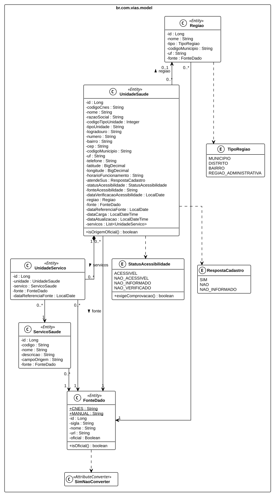
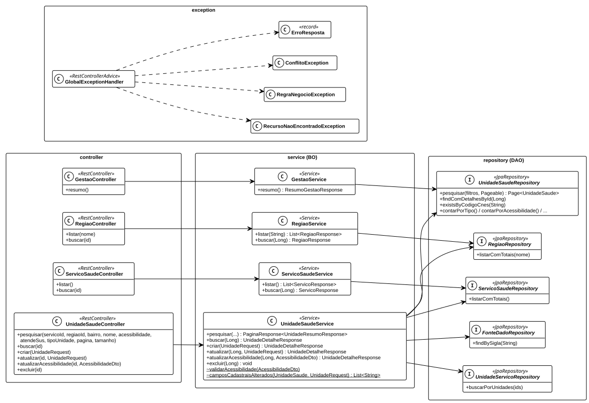
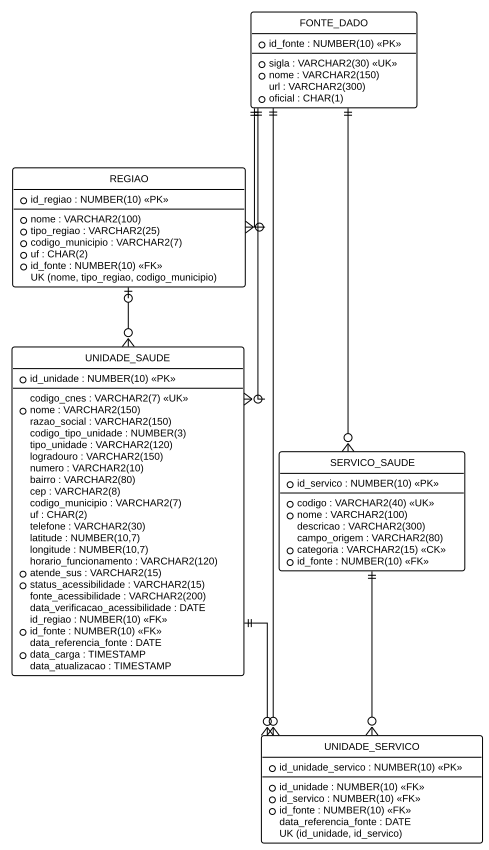
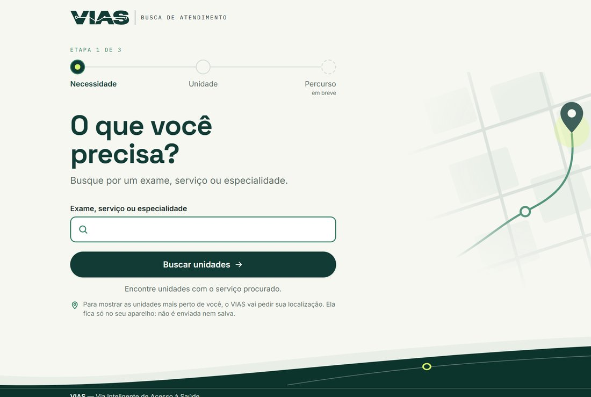
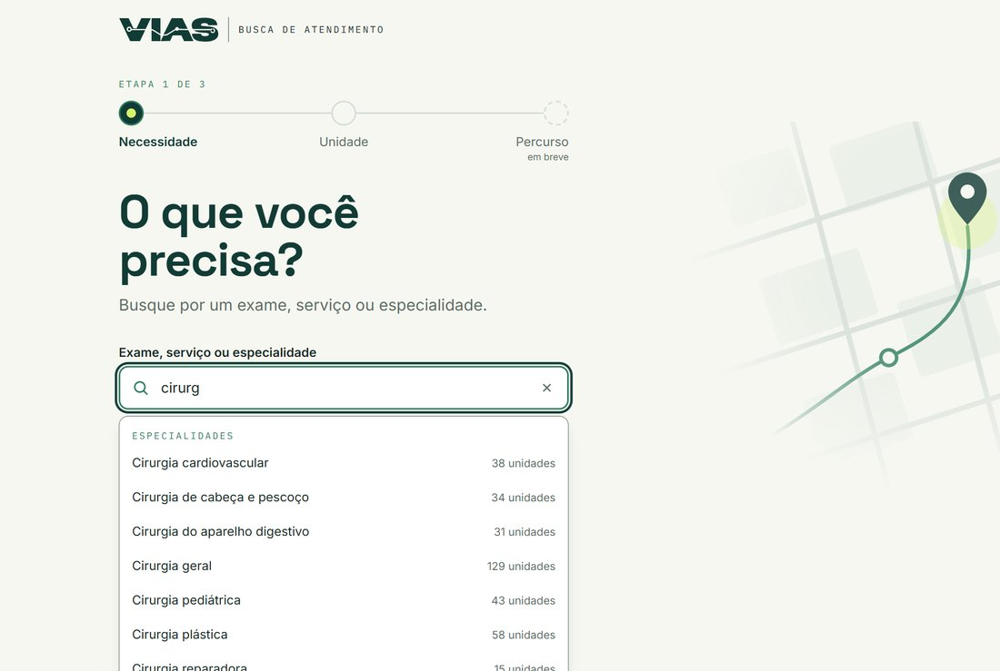
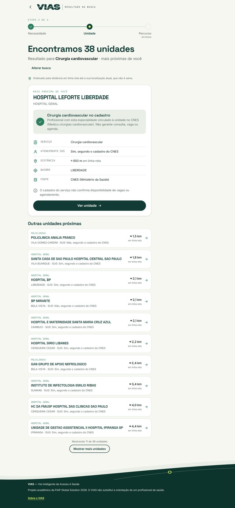
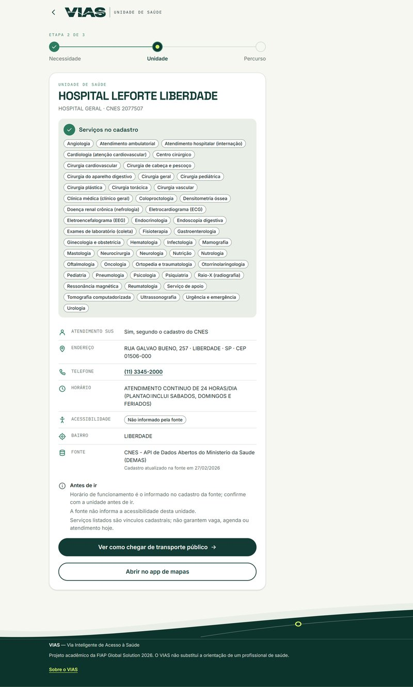
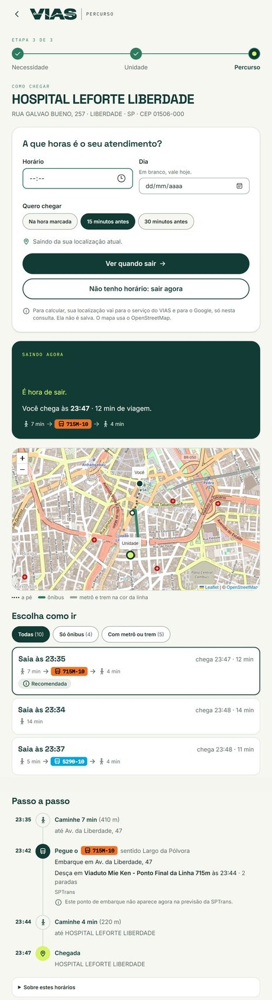

VIAS
| Nome completo | RM |
|---|---|
| Felipe de Andrade Godoi | RM566209 |
| Nicolas Marinho dos Santos | RM563185 |
| Raphael Naome Taketa | RM562321 |
| Victor Ribeiro Guimarães Lira | RM566213 |
Engenharia de Software · 2º ano · FIAP Paulista · São Paulo, novembro de 2026
O VIAS – Via Inteligente de Acesso à Saúde ajuda o cidadão a descobrir qual unidade de saúde corresponde à sua necessidade e a entender como chegar até ela pelo percurso que consegue utilizar. O diferencial não é apenas listar a unidade mais próxima: é cruzar a necessidade com os serviços cadastrados, considerar acessibilidade apenas quando houver informação válida e mostrar sempre de onde veio cada dado.
A solução tem quatro partes: o site em Next.js, esta API em Java / Spring Boot, o banco Oracle e o algoritmo de rotas em Python. O site nunca acessa o banco diretamente; toda consulta passa pela API.
Esta entrega implementa a API, com 1.092 unidades de saúde reais do município de São Paulo, carregadas do CNES/DATASUS (API de Dados Abertos do Ministério da Saúde) em 16/11/2026:
| Tipo de unidade (CNES) | Unidades |
|---|---|
| Centro de saúde / Unidade básica (UBS) | 548 |
| Policlínica | 314 |
| Hospital geral | 165 |
| Pronto atendimento (UPA, AMA 24h, PA) | 65 |
| Total (somente estabelecimentos ativos) | 1.092 |
O fluxo atendido pela API: o cidadão pesquisa por serviço, região, bairro, tipo de unidade, atendimento SUS ou acessibilidade; vê o detalhe da unidade com endereço, horário cadastral, serviços e proveniência; e o gestor consulta indicadores agregados do cadastro.
Encontrar atendimento de saúde exige saber qual tipo de unidade procurar e se ela é acessível. Essas informações existem em fontes públicas, mas estão dispersas e incompletas. O CNES, fonte oficial de estabelecimentos, não publica acessibilidade física; o cadastro de um serviço não garante vaga nem atendimento hoje.
Muitos aplicativos tratam a falta de dado como resposta negativa ("não acessível") ou como garantia ("aberto agora"). Para quem usa cadeira de rodas ou depende de horário, isso gera viagens perdidas. Por isso o VIAS adota uma regra central: informação desconhecida é mostrada como desconhecida, e cada dado carrega a sua fonte e a sua data.
Oferecer uma API RESTful em Java, com Spring Boot e Oracle, que represente o domínio de acesso a unidades de saúde com dados oficiais rastreáveis e estados explícitos de informação desconhecida.
ACESSIVEL, NAO_ACESSIVEL, NAO_INFORMADO, NAO_VERIFICADO), exigindo fonte e data para afirmar acessível ou não acessível.Cidadão / Gestor → Front-end Next.js → API Java / Spring Boot → Oracle FIAP
└─ (próxima fase) módulo Python de rotas, via HTTP/JSON
O código fica em services/api e segue o padrão das aulas (fluxo Controller → Service → Repository → Banco):
br.com.vias ├── model/ Entidades JPA: UnidadeSaude, ServicoSaude, UnidadeServico, Regiao, FonteDado + enums ├── repository/ Interfaces Spring Data JPA (camada DAO) ├── service/ Regras de negócio (camada BO) ├── dto/ Records de entrada (Bean Validation) e de saída; a API nunca expõe a entidade ├── controller/ @RestController: GET, POST, PUT, DELETE ├── exception/ Exceções de domínio + GlobalExceptionHandler (@RestControllerAdvice) ├── integracao/ Clientes HTTP do Google Routes e do Olho Vivo (SPTrans), usados no percurso └── config/ Swagger (springdoc) e CORS resources/db/migration V1 (tabelas), V2 (carga do CNES), V3 e V4 (ajustes do catálogo e da data de carga), V5 (exames e serviços especializados), V6 (especialidades) – Flyway scripts/ baixar_cnes.py (baixa o CNES) e gerar_carga_sql.py (gera a V2)
ddl-auto=none. O Hibernate não altera o banco; o schema vem dos scripts versionados (Flyway).DB_URL, DB_USER, DB_PASS); nada no Git.| Regra | Como a API aplica |
|---|---|
| Desconhecido continua desconhecido | Campos sem dado na fonte voltam como null no JSON (nunca omitidos). Atendimento SUS usa SIM / NAO / NAO_INFORMADO; acessibilidade começa em NAO_INFORMADO. |
| Acessibilidade comprovada | ACESSIVEL e NAO_ACESSIVEL exigem fonte e data de verificação (validação no Service e CHECK no Oracle). Data no futuro é recusada. |
| Dados oficiais protegidos | Em unidade do CNES, o PUT só altera acessibilidade e região; qualquer campo cadastral diferente é recusado com 422, listando os campos. Unidades do CNES não podem ser excluídas pela API. |
| Cadastro manual identificado | POST cria a unidade com a fonte CADASTRO_MANUAL (não oficial), que pode ser editada e excluída. Código CNES é opcional, com 7 dígitos e único (409 se repetido). |
| Serviço não é vaga | Um vínculo em UNIDADE_SERVICO significa "registrado no cadastro". A resposta de detalhe traz avisos explícitos para o front-end. |
| Três datas, nunca misturadas | dataReferencia (informada pela fonte), dataCarga (entrada no banco) e dataAtualizacao (última edição pela API). |
| Coordenadas completas | Latitude e longitude vêm juntas ou nenhuma; não há geocodificação nem "chute" por bairro. |
GET /api/unidades/84
{ "codigoCnes": "2027461", "nome": "UBS PARQUE DA LAPA", "tipoUnidade": "CENTRO DE SAUDE/UNIDADE BASICA",
"endereco": { "logradouro": "RUA BERGSON", "numero": "52", "bairro": "VL LEOPOLDINA", "cep": "05301060", ... },
"horarioFuncionamento": "ATENDIMENTO NOS TURNOS DA MANHA, TARDE E NOITE", "atendeSus": "SIM",
"acessibilidade": { "status": "NAO_INFORMADO", "fonte": null, "dataVerificacao": null },
"servicos": [ { "codigo": "ATEND_ATENCAO_PRIMARIA", "nome": "Atenção primária (UBS)", "fonte": "CNES_SR", ... }, ... ],
"proveniencia": { "fonte": "CNES_DEMAS", "oficial": true, "dataReferencia": "2026-04-02",
"dataCarga": "2026-11-18T18:39:44", "dataAtualizacao": null },
"camposCadastraisProtegidos": true,
"avisos": [ "Horário de funcionamento é o informado no cadastro da fonte; confirme com a unidade antes de ir.",
"A fonte não informa a acessibilidade desta unidade.",
"Serviços listados são vínculos cadastrais; não garantem vaga, agenda ou atendimento hoje." ] }
Os diagramas refletem o código Java entregue. A Figura 1 mostra a camada modelo; a Figura 2, as camadas Controller, Service (BO), Repository (DAO), Integração e Exception.



| Relacionamento | Cardinalidade | Regra |
|---|---|---|
| REGIAO → UNIDADE_SAUDE | 1:N (opcional) | Hoje a região é o bairro informado no CNES (granularidade provisória) |
| UNIDADE_SAUDE ↔ SERVICO_SAUDE | N:N via UNIDADE_SERVICO | UNIQUE (unidade, serviço); apagar a unidade apaga os vínculos |
| FONTE_DADO → demais tabelas | 1:N | Toda linha aponta a sua fonte (CNES_DEMAS, CNES_EQ, CNES_SR, CNES_PF ou CADASTRO_MANUAL) |
Constraints relevantes: codigo_cnes UNIQUE e com 7 dígitos (REGEXP_LIKE); estados de acessibilidade e SUS por CHECK; acessibilidade afirmada exige fonte e data; latitude e longitude juntas.
Telas reais do site em Next.js, publicado na Vercel e ligado a esta API no Render. Todos os dados mostrados vêm da API: unidades, serviços e especialidades do CNES, e o percurso calculado pelo Google Routes com a previsão da SPTrans. Site: https://vias-jet.vercel.app (capturas de 18/11/2026).

GET /api/servicos

GET /api/unidades?servicoId=…
GET /api/unidades/{id}
POST /api/percursos| Tela | Requisição |
|---|---|
| 1. Necessidade | GET /api/servicos |
| 2. Resultados | GET /api/unidades, GET /api/servicos/{id} |
| 2. Detalhe | GET /api/unidades/{id} |
| 3. Percurso | POST /api/percursos |
O cadastro, a alteração e a exclusão de unidades (POST, PUT e DELETE /api/unidades) e o painel de indicadores (GET /api/gestao/resumo) são operações de gestão. Não têm tela no site público e são demonstrados pelo Swagger (/swagger-ui.html).
Na Tela 3, a localização da pessoa vai no corpo da requisição e não é gravada. Na captura, a origem foi simulada (Praça da Sé).
URL base: https://vias-dfwu.onrender.com · Swagger em /swagger-ui.html · JSON · datas no formato ISO (aaaa-mm-dd).
| Método | Endpoint | Descrição | Sucesso / erros |
|---|---|---|---|
| Unidades de saúde | |||
| GET | /api/unidades | Pesquisa paginada. Filtros opcionais e combináveis: servicoId, regiaoId, bairro, nome, acessibilidade, atendeSus, tipoUnidade (código CNES: 2, 4, 5, 73), pagina (0…), tamanho (1–100, padrão 20). Resposta: items, total, pagina, tamanho, totalPaginas. | 200 · 400 · 404 |
| GET | /api/unidades/{id} | Detalhe com endereço, serviços, região, acessibilidade, proveniência e avisos | 200 · 404 |
| POST | /api/unidades | Cadastro manual (fonte CADASTRO_MANUAL). Só nome é obrigatório | 201 · 400 · 404 · 409 · 422 |
| PUT | /api/unidades/{id} | Atualização. Em unidade do CNES, só acessibilidade e regiaoId mudam | 200 · 400 · 404 · 409 · 422 |
| PUT | /api/unidades/{id}/acessibilidade | Registra a acessibilidade verificada (qualquer unidade) | 200 · 400 · 404 · 422 |
| DELETE | /api/unidades/{id} | Exclui unidade de cadastro manual; unidade do CNES é recusada | 204 · 404 · 422 |
| Catálogos e painel | |||
| GET | /api/servicos | Catálogo com o total de unidades vinculadas: atendimentos, exames e especialidades (campo categoria) | 200 |
| GET | /api/servicos/{id} | Detalhe de um serviço | 200 · 404 |
| GET | /api/regioes?nome=LAPA | Regiões (bairros do CNES) com o total de unidades; nome filtra | 200 |
| GET | /api/regioes/{id} | Detalhe de uma região | 200 · 404 |
| GET | /api/gestao/resumo | Indicadores agregados do cadastro, com a definição de cada um | 200 |
| Percurso | |||
| POST | /api/percursos | Percurso de transporte público até a unidade (Google Routes), com hora sugerida de saída e previsão ao vivo dos ônibus da SPTrans (Olho Vivo), indicando os acessíveis. A origem vai no corpo e não é gravada | 200 · 400 · 404 · 503 |
POST /api/unidades
{ "nome": "Ponto de vacinacao temporario - Feira da Lapa", "bairro": "LAPA", "atendeSus": "SIM",
"servicoIds": [1],
"acessibilidade": { "status": "ACESSIVEL", "fonte": "Vistoria da equipe VIAS", "dataVerificacao": "2026-11-14" } }
→ 201 Created (proveniencia.fonte = "CADASTRO_MANUAL", camposCadastraisProtegidos = false)
PUT /api/unidades/84/acessibilidade
{ "status": "ACESSIVEL" }
→ 422 "Acessibilidade ACESSIVEL exige a fonte e a data da verificacao. Sem comprovacao, use NAO_VERIFICADO ou NAO_INFORMADO."
O GlobalExceptionHandler (@RestControllerAdvice) devolve todos os erros no mesmo formato JSON, sem stack trace, SQL ou detalhes internos:
{ "timestamp": "2026-11-16T19:44:51", "status": 400, "erro": "Bad Request",
"mensagem": "Existem campos invalidos na requisicao.", "caminho": "/api/unidades",
"campos": [ { "campo": "codigoCnes", "mensagem": "o codigo CNES tem 7 digitos" } ] }
| Exceção | Status | Quando ocorre |
|---|---|---|
MethodArgumentNotValidException, HandlerMethodValidationException | 400 | Campos ou parâmetros inválidos (lista em campos) |
HttpMessageNotReadableException, MethodArgumentTypeMismatchException | 400 | JSON malformado, enum ou data inválida, id não numérico |
RecursoNaoEncontradoException, NoResourceFoundException | 404 | Unidade, serviço ou região inexistente; rota inexistente |
HttpRequestMethodNotSupportedException | 405 | Método HTTP não suportado no endereço |
ConflitoException, DataIntegrityViolationException | 409 | Código CNES repetido; violação de constraint no Oracle |
RegraNegocioException | 422 | Edição/exclusão de dado oficial, acessibilidade sem comprovação, coordenada incompleta |
ServicoExternoException | 503 | Serviço externo de rotas (Google Routes) não configurado ou sem resposta |
Exception | 500 | Erro inesperado (registrado no log, sem detalhes ao cliente) |
/api/unidades).| Ferramenta | Versão | Uso |
|---|---|---|
| Java JDK | 21 (LTS) | Linguagem |
| Spring Boot | 3.5.7 | Web, Data JPA, Validation, Actuator |
| Maven | 3.9 ou superior (ou o do IntelliJ) | Build e dependências |
| Oracle Database | 19c (servidor da FIAP) ou superior | Persistência; driver ojdbc11 |
| Flyway | 11 (gerenciado pelo Spring Boot) | Criação das tabelas e carga do CNES (V1 a V6) |
| springdoc-openapi | 2.8.9 | Swagger UI |
| IntelliJ IDEA | 2025 ou superior | IDE |
| Insomnia ou Postman | atual | Testes HTTP |
| Git | 2.40 ou superior | Clonar o repositório |
| Docker Desktop | 4.x (opcional) | Rodar tudo local com docker compose |
| Python | 3.11 ou superior (opcional) | Scripts de atualização da carga do CNES |
| Render.com | Plano Free, runtime Docker | Deploy |
services/api)/swagger-ui.html · saúde em /actuator/healthservices/api no IntelliJ (File › Open).ViasApiApplication › Environment variables:DB_USER=rmSEU_RM;DB_PASS=sua_senhajdbc:oracle:thin:@oracle.fiap.com.br:1521:ORCL (para outro banco, defina DB_URL).ViasApiApplication. Na primeira subida, o Flyway aplica as migrations V1 a V6: cria as 5 tabelas, carrega as 1.092 unidades do CNES e o catálogo de 83 itens (atendimentos, exames e especialidades).http://localhost:8080/swagger-ui.html.Se o schema já tiver sido criado no banco, defina FLYWAY_ENABLED=false.
cd services/api docker compose up --build # Oracle Free + API → http://localhost:8080/swagger-ui.html
mvn test # regras de negócio (JUnit 5 + Mockito) python scripts/baixar_cnes.py # baixa um novo recorte do CNES python scripts/gerar_carga_sql.py scripts/dados/cnes_sao_paulo_AAAA-MM-DD.json
render.yaml cria o serviço vias-api (runtime Docker, pasta services/api, health check em /actuator/health).DB_USER, DB_PASS e CORS_ORIGENS (URL do site Next.js). Para o percurso, também GOOGLE_ROUTES_CHAVE e OLHOVIVO_TOKEN.| Variável | Obrigatória | Padrão |
|---|---|---|
DB_URL | Não | jdbc:oracle:thin:@oracle.fiap.com.br:1521:ORCL |
DB_USER / DB_PASS | Sim | RM e senha do Oracle da FIAP |
CORS_ORIGENS | Não | http://localhost:3000 (separar várias por vírgula) |
FLYWAY_ENABLED | Não | true |
DB_POOL_SIZE | Não | 3 |
GOOGLE_ROUTES_CHAVE | Para o percurso | vazia: POST /api/percursos responde 503. Chave do Google Cloud com o Routes API ativado |
OLHOVIVO_TOKEN | Não | vazio: o percurso sai sem previsão ao vivo. Token gerado em sptrans.com.br/desenvolvedores |
| Limitação | Situação e próximo passo |
|---|---|
| Acessibilidade | O recurso CNES usado não publica acessibilidade física; as 1.092 unidades estão NAO_INFORMADO. Próximo passo: registrar vistorias pelo endpoint de acessibilidade, com fonte e data. |
| Catálogo de serviços | Exames, serviços especializados e especialidades vêm dos arquivos de equipamentos, serviços e profissionais do CNES. Um vínculo indica que a unidade tem o recurso cadastrado; não garante vaga, agenda ou atendimento no dia. |
| Indicadores do CNES | Indicador 0 ou vazio não gera vínculo e não é lido como "não oferece". Ex.: muitas UBS aparecem sem o indicador ambulatorial. |
| Regiões | A região é o bairro digitado no CNES, com grafias diferentes para o mesmo lugar (ex.: "VL LEOPOLDINA", "V LEOPOLDINA", "VILA LEOPOLDINA"). A normalização (distrito ou região administrativa) é um próximo passo. |
| Coordenadas e tipos | Exibidos como publicados pela fonte, sem correção manual. Algumas coordenadas apontam para o centro da cidade. O tipo "Centro de saúde/Unidade básica" também inclui unidades prisionais. |
| Rotas e transporte | A API não calcula rotas: a lógica pertence ao módulo Python. A integração HTTP (contrato POST /calcular-rota), GTFS e Olho Vivo ficam para a próxima fase, após validar fontes e contrato. |
/cnes/estabelecimentos, município 355030, tipos 2, 4, 5 e 73, consultado em 16/11/2026. Somente estabelecimentos ativos. Nenhum dado pessoal de cidadãos é armazenado.